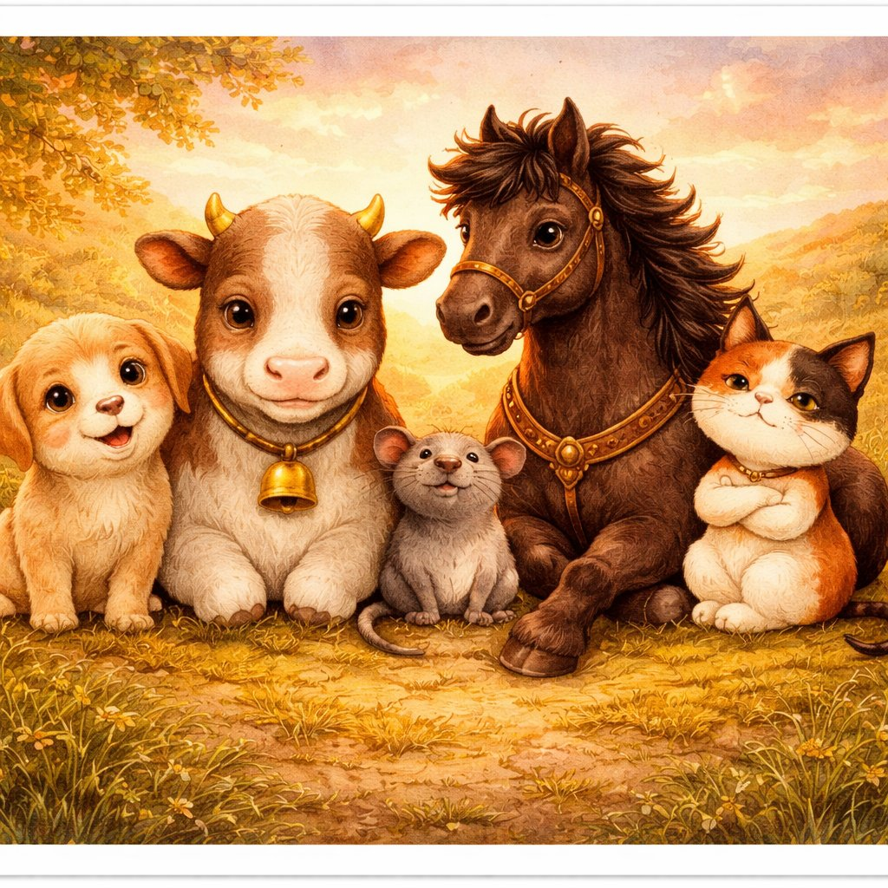
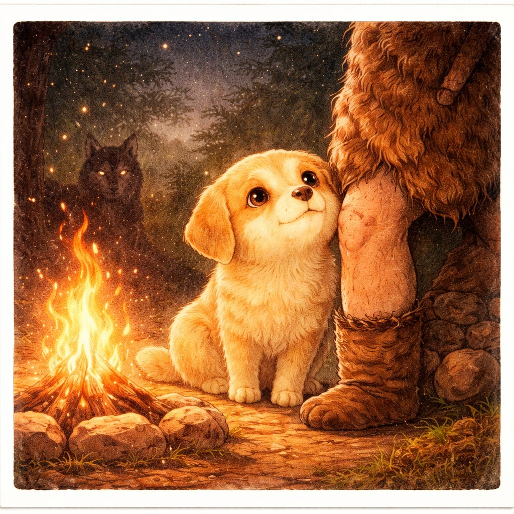
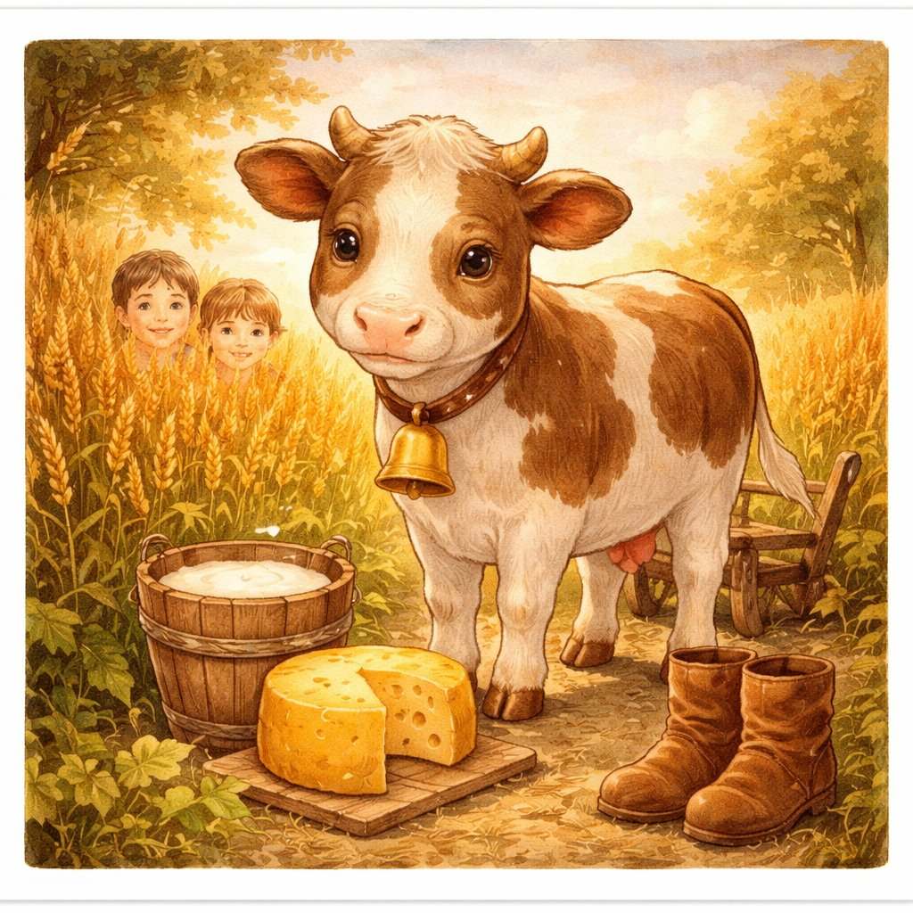
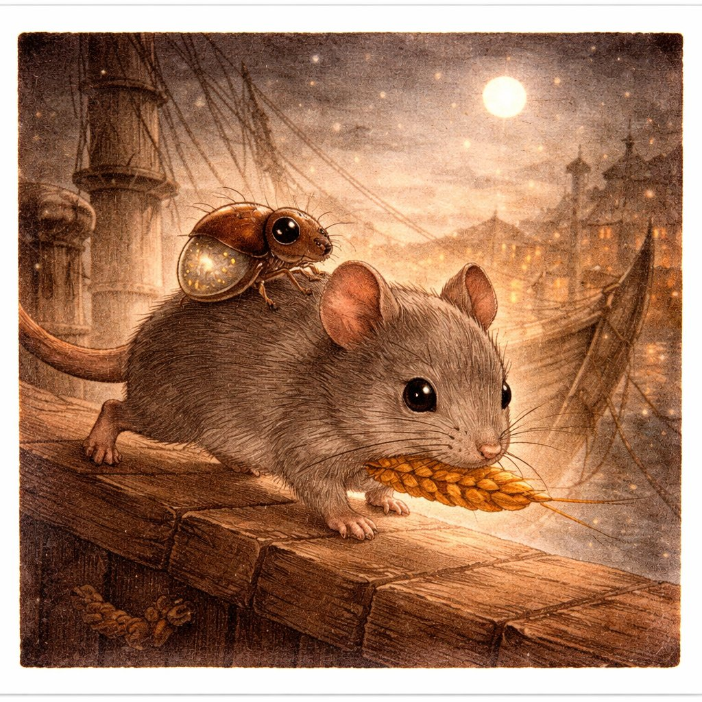
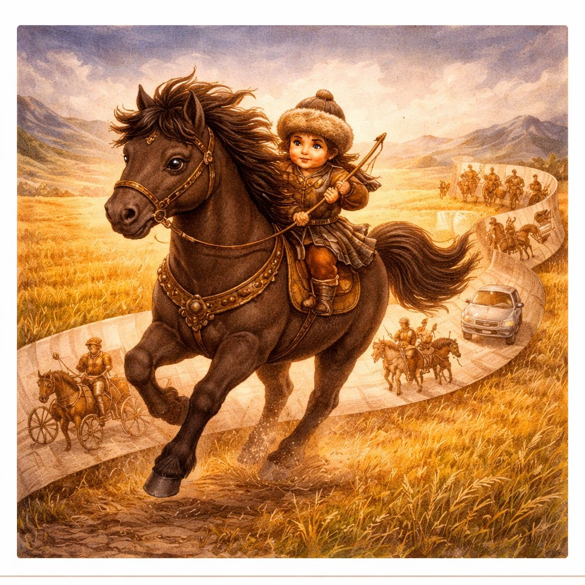
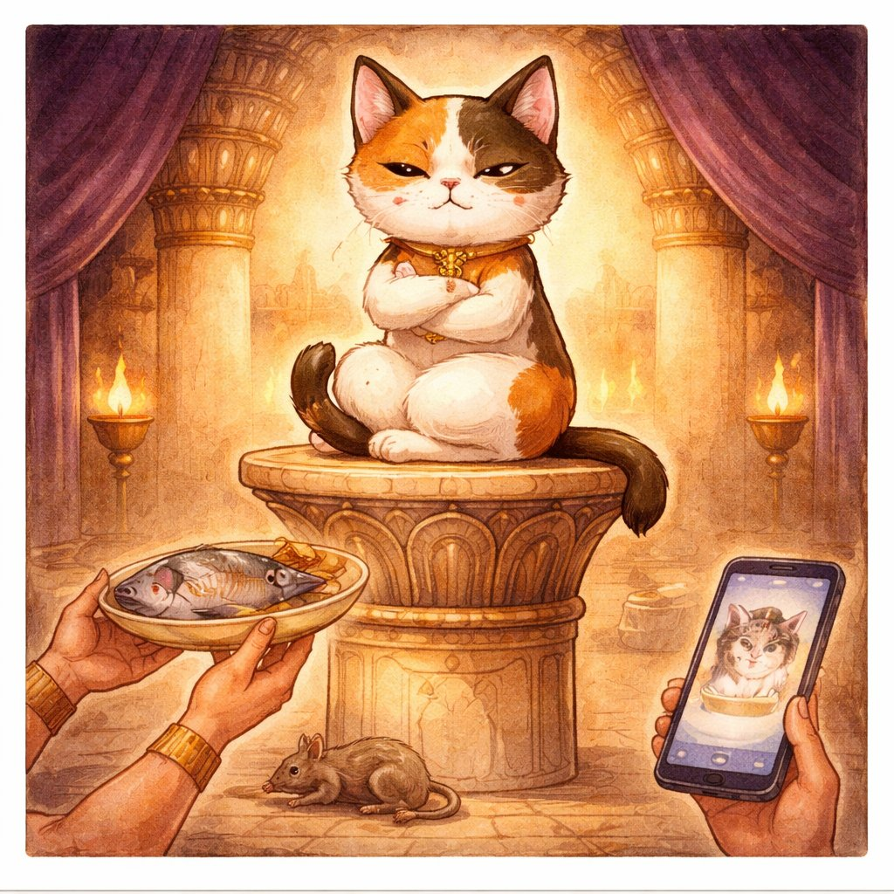

にんげんも、じつは 「けもの」だ。
ほ乳類（ほにゅうるい）という なかまの いちいん。
でも ある日、にんげんは 気づいた。
「あいつら、つかえるぞ」。
ちからの つよい やつに にもつを はこばせ、
ちちの でる やつを そばに おき、
はなの きく やつと いっしょに かりに でた。
けものたちも 気づいた。
「こいつらの そばにいると、メシに ありつける」。
これは、おなじ ほ乳類の となりびとたちと
にんげんの、ふかい ふかい おつきあいの おはなし。

ワンタは イヌ。
人類が はじめて 家畜化した 動物。
農業が はじまる はるか前、まだ にんげんが 狩りで くらしていた 時代から いっしょだった。
オオカミの なかでも 人間を こわがらない 個体が、
キャンプの まわりに すみつき、のこりものを たべ、
かわりに 番犬として てきを おしえた。
これが 1万5千年の 友情の はじまり。
イヌは 人間の 表情を 読める ほぼ唯一の 動物。
人間の 指さしを 理解し、目を みつめ、名前を おぼえる。
これは チンパンジーにも できない。
1万5千年の「共進化」で、イヌの脳は 人間を 読むように 進化した。

モーさんは ウシ。
もとは オーロックス という 巨大な 野生牛。
約1万年まえ、メソポタミアで 家畜化された。
ウシは 「歩く 文明装置」。
ミルク、肉、革、骨、角、糞（肥料・燃料）——
捨てるところが ほとんど ない。
しかも 畑を 耕す ちからも ある。農業革命の まさに 主役。
ウシが 出すメタンガスは、全温室効果ガスの 約14%。
でも 世界の 何十億人が ウシの 乳と肉に たよっている。
培養肉、植物性ミルク、メタン削減飼料 ——
文明の母との 付き合い方を、いま にんげんは つくりなおしている。

チュー太は ネズミ。
人間が 農業を はじめて 穀物を ためこんだ瞬間、
ネズミは 人間の そばに やってきた。招かれざる 居候。
ネズミは 人間の 船にのって 世界じゅうに ひろがった。
そして からだには ノミ（ノミ吉）が いて、
ノミの なかには ペスト菌（ペス太）が いた。
第1巻のペス太、第2巻のノミ吉、第3巻のチュー太 —— 災厄の三連鎖。
チュー太（ネズミ） → ノミ吉（ノミ） → ペス太（ペスト菌） → 人間
動物 → 虫 → 菌。災厄は 3つの スケールを またいで つながっていた。
この 発見が「公衆衛生」という 学問を うんだ。
病気を ふせぐには、菌だけでなく、虫も、動物も、環境も、
まるごと 見なければ いけない。

ハヤテは ウマ。
約5500年前に カザフスタンあたりで 家畜化された。
ウマに のった 人間は、歩く速度の 5倍で 移動できるようになった。
これは 世界を 根底から かえた。
騎馬民族は 農耕民族を 圧倒した。
モンゴル帝国は ウマで 史上最大の 陸上帝国を きずいた。
でも ウマは 戦争だけじゃない。
郵便、農耕、運搬 —— 蒸気機関が できるまで、ウマは「生きたエンジン」だった。
ウマがいなければ、シルクロードは なく（キヌちゃんの 糸も とどかなかった）、
モンゴル帝国も ローマ帝国も、いまの かたちには ならなかった。
にんげんの 歴史は、ウマの せなかの うえで つくられた。

ミケ先輩は ネコ。
じつは ネコは 自分から 人間の そばに きた。
人間が 穀物を ためこむ → ネズミが 集まる → ネズミを 狩るために ネコが きた。
「家畜化」されたのではなく、「自ら 居候した」。
だから イヌとは ちがう。
イヌは 人間の 命令を きく。ネコは きかない。
イヌは 人間の 表情を よむ。ネコは よめるけど 無視する。
唯一 「なつかないまま 共生している」 家畜。それが ネコ。
なぜ 人間は、言うことを きかない 動物を ここまで 愛するのか？
科学者も まだ 完全には わかっていない。
ゴロゴロ音の 周波数（25〜50Hz）が 人間の ストレスを へらす説、
赤ちゃんに にた 顔の 比率が 母性本能を 刺激する説、
そして —— 「手に入らないものほど 好きになる」説。
ワンタに おそわったこと — 「そばに いるだけで、つよくなれる」。
モーさんに おそわったこと — 「もらうだけじゃ、つづかない」。
チュー太に おそわったこと — 「にんげんの かげに、かならず いる」。
ハヤテに おそわったこと — 「のせてくれた せなかを、わすれちゃいけない」。
ミケ先輩に おそわったこと — 「したがわなくても、いっしょに いられる」。
① 感謝 — イヌ、ウシ、ウマ。文明を つくったのは にんげんだけじゃない。
② 責任 — 家畜化とは「いのちを あずかること」。もらうなら、かえさなきゃ。
③ 共存 — ネコのように したがわなくても、ネズミのように やっかいでも、となりに いる。それが 共存。
ぼくたちは、けものの なかまだ。
けものと くらし、けものに まなび、
けものと いっしょに、ここまで きた。